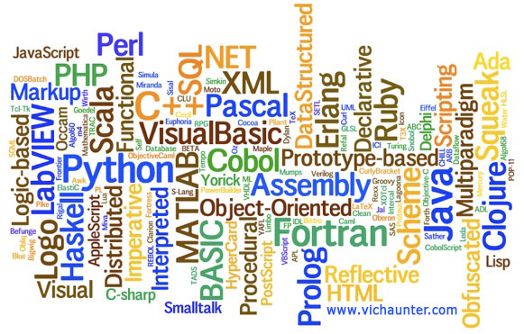
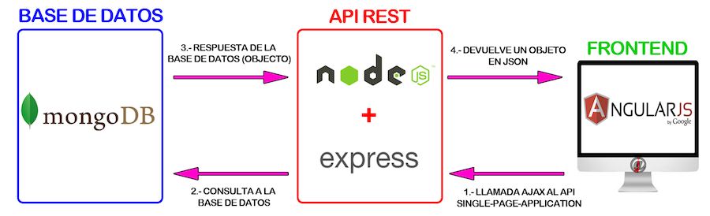

Introduccion a Node Js
¿Que es?
Node Js es un entorno javascript que funciona del lado del servidor
Utiliza el motor V8 de Google diseñado para ejecutar codigo javascript de una forma extremadamente rápida
¿Que es?
Trabaja con un único hilo de ejecución
Programación Asincrona Orientado a Eventos
¿Quienes lo usan?
1. https://strongloop.com/node-js/nodejs-infographic/
2. How We Built eBay's First Node.js Application: http://www.ebaytechblog.com/2013/05/17/how-we-built-ebays-first-node-js-application/
3. Node Js at PayPal: https://www.paypal-engineering.com/2013/11/22/node-js-at-paypal/
HTML + CSS + JS + ¿¿??

El entorno

¡¡Node Js en el lado del servidor!!
¿Como Empiezo?
Instalacion
https://nodejs.org/en/download/
Hello Drupal
const http = require('http');
const hostname = '0.0.0.0';
const port = 3000;
const server = http.createServer((req, res) => {
res.writeHead(200, {'Content-Type': 'text/plain'});
res.end('Hello Drupal!');
});
server.listen(port, hostname, () => {
console.log(`Server Running at http://${hostname}:${port}/`);
});
Modulo OS
const os = require('os');
console.log( 'System: ' + os.platform() );
console.log(os.arch());
console.log( 'TotalMem: ' + os.totalmem()/1024 );
console.log( 'FreeMem: ' + os.freemem()/1024 );
Modulo File System
const fs = require('fs');
// Read a dir
fs.readdir('./file-system', (err, files) => {
if (err) throw err;
var i = 0;
files.forEach((element) => {
console.log(element);
i++;
}, this);
console.log('Num Files: ' + i);
});
// Read a file
fs.readFile('./file-system/file1.txt', 'utf8', (err, data) => {
console.log(data);
});
Gestion de Dependencias

npm es un gestor de dependencias para nodejs
Podemos extender la funcionalidad de node
Comandos Utiles
npm install -g bower // instalar bower globalmente
npm install --save express // instalar express en el proyecto
npm install --save-dev morgan // instalar morgan como dependencia solo para desarrollo
npm list // listar dependencias instaladas
npm list -g // listar dependencias instaladas globalmente
Express.js
Web Framework para nodejs
npm install express --save
Hola Mundo con ExpressJs
const express = require('express');
var app = express();
app.get('/', (req, res) => {
res.send('Hello World');
});
app.listen(3000, () => {
console.log('This app with express is loading in port 3000');
});
Archivos Estaticos en nodejs
var express = require('express');
var app = express();
app.use(express.static('public'));
app.get('/', (req, res) => {
// res.render('index');
res.send('Hola Mundo');
});
app.listen(3000);
Templates
var express = require('express');
var app = express();
app.set('view engine', 'jade');
app.get('/', (req, res) => {
res.render('index', {tit: 'Hola Drupaleros', saludo: 'este deberia ser un saludo..'});
});
app.listen(3000);
API Rest
Rest es un tipo de arquitectura de de desarrollo web que se apoya totalmente en el estándar HTTP
REST nos permite crear servicios y aplicaciones que pueden ser usadas por cualquier dispositivo o cliente que entienda HTTP

Node + Express nos permite implementar servicios rest de manera sencilla
MEAN STACK (MongoDB + Express + Angular + Node)
Ejemplo
var router = require('express').Router()
var Users = require('../models/user.js')
//------ controllers
router.get('/users', function (req, res) {
Users.find().then(function (result) {
res.send(result)
}).catch(function (err) {
console.log(err)
})
});
Socket.io (Server)
module.exports = function (io) {
'use strict';
io.on('connection', function (socket) {
socket.on('message', function(from, msg) {
console.log('received message from', from, 'msg', JSON.stringify(msg));
console.log('broadcasting message');
console.log('payload is', msg);
io.sockets.emit('broadcast', {
payload: msg,
source: from
});
console.log('broadcast complete');
});
});
}
Socket.io (Client)
$scope.$on('socket:broadcast', function (event, data) {
$log.debug('got a message', event.name);
if(!data.payload) {
$log.error('invalid message',
'event', event,
'data', JSON.stringify(data));
return;
}
$scope.$apply(function() {
$scope.messageLog = $scope.messageLog +
messageFormatter(new Date(), data.source, data.payload);
});
});
Links
Diapositiva
Codigo de ejemplo: https://github.com/cmtp/demos-nodejs
Fin